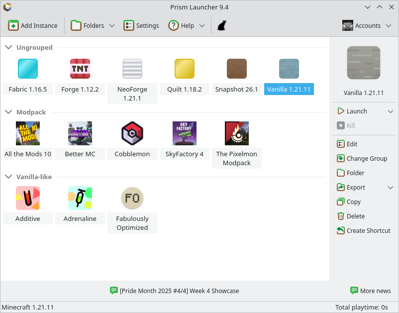
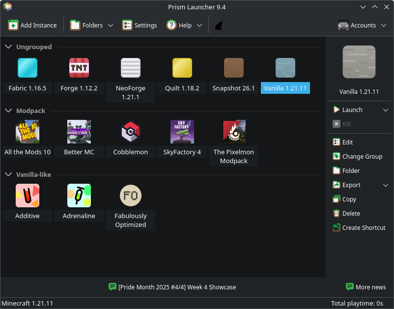

Linux Download


Official Packages
Flathub
Flathub is our primary method of distribution on Linux.
App Center
It may already be setup on your system, but if not, see how to enable it for your distribution here. After setup, Prism Launcher should now be available in your app center (i.e., GNOME Software, Discover)
CLI
You can also enable Flathub and install the launcher with the following commands:
flatpak remote-add --if-not-exists flathub https://dl.flathub.org/repo/flathub.flatpakrepoflatpak install flathub org.prismlauncher.PrismLauncherNightly Repository
We offer our own Flatpak remote with in-development builds of the launcher.
App Center
You should be able to open this link with your chosen App Center.
CLI
You can also enable Flathub, our remote, and install the launcher with the following commands:
flatpak remote-add --if-not-exists prismlauncher https://flatpak.prismlauncher.org/prismlauncher.flatpakrepoflatpak install prismlauncher org.prismlauncher.PrismLauncher//nightlyNix / NixOS
An official Nix Flake is available for development and release builds.
AppImage
AppImages allow you to take a single file and run Prism anywhere. AppImage builds only support x86_64 and ARM64.
With Gear Lever (Recommended)
Download Gear Lever from flathub. Once installed, you will be prompted to integrate the launcher’s AppImage with your desktop when you open it for the first time.
Making the AppImage Executable
After downloading the AppImage, open your file manager and make it executable. You should now be able to run it with a click!
CLI
on x86-64:
curl -LO https://github.com/PrismLauncher/PrismLauncher/releases/download/11.1.1/PrismLauncher-Linux-x86_64.AppImagechmod +x ./PrismLauncher-Linux-x86_64.AppImage./PrismLauncher-Linux-x86_64.AppImageon ARM64:
curl -LO https://github.com/PrismLauncher/PrismLauncher/releases/download/11.1.1/PrismLauncher-Linux-aarch64.AppImagechmod +x ./PrismLauncher-Linux-aarch64.AppImage./PrismLauncher-Linux-aarch64.AppImageCommunity Packages
Alpine Linux
APK Packages are available on Alpine Linux Edge for multiple architectures
apk add prismlauncherArch Linux / Manjaro
Packages are available in both the official Arch Linux/Manjaro repositories and the AUR (Development Builds)
Installing Prism
# Latest release (binary)sudo pacman -S prismlauncherInstalling Dev Builds (AUR)
# Newest Git commit (compiled from source)yay -S prismlauncher-gitCentOS Stream / Fedora / Red Hat Enterprise Linux
RPM packages are available on Copr for x86_64 and aarch64
If you are on an Enterprise Linux distribution (RHEL, CentOS, Rocky, etc.) and do not have the EPEL repositories enabled, please enable them here
# Enables the copr reposudo dnf copr enable g3tchoo/prismlauncher# Install the latest releasesudo dnf install prismlauncherAs an alternative, RPM packages for Fedora are also available from Terra:
# Install the terra repositorysudo dnf install --nogpgcheck --repofrompath 'terra,https://repos.fyralabs.com/terra$releasever' terra-release# Install the latest releasesudo dnf install prismlauncherDebian / Ubuntu (x86_64, ARM64)
Packages are made available for Ubuntu, Debian, and Linux Mint through the Prism Launcher for Debian repository.
sudo wget https://prism-launcher-for-debian.github.io/repo/prismlauncher.gpg -O /usr/share/keyrings/prismlauncher-archive-keyring.gpg \ && echo "Types: debURIs: https://prism-launcher-for-debian.github.io/repoSuites: $(. /etc/os-release; echo "${UBUNTU_CODENAME:-${DEBIAN_CODENAME:-${VERSION_CODENAME}}}")Components: mainSigned-By: /usr/share/keyrings/prismlauncher-archive-keyring.gpg" | sudo tee /etc/apt/sources.list.d/prismlauncher.sources \ && sudo apt update \ && sudo apt install prismlauncherDebian / Pi OS / Ubuntu (ARM32/64)
Prism Launcher is available in the pi-apps store
Only Debian/Raspbian/Pi OS Buster and newer and Ubuntu 18.04 and newer are supported.
Gentoo
Ebuilds are available in the official Gentoo repository, under games-action/prismlauncher
For the time being, newer versions of the package are not stabilized, so they are masked for ~amd64 and ~arm64 only.
sudo emaint sync -a
# If you need to unmask the package, and considering `package.accept_keywords` to be a folder.echo ">=games-action/prismlauncher-5.0" | sudo tee -a /etc/portage/package.accept_keywords/prismlauncher# Or do this if you want to build from the latest commit instead of a releaseecho "=games-action/prismlauncher-9999 **" | sudo tee -a /etc/portage/package.accept_keywords/prismlauncher
emerge games-action/prismlauncherHave fun! :)
Nixpkgs
Installation instructions for stable releases are available on the NixOS Wiki.
openSUSE
An RPM package is available on the Open Build Service
# Add repository (if on Leap, replace 'openSUSE_Tumbleweed' with your release version)zypper addrepo https://download.opensuse.org/repositories/home:getchoo/openSUSE_Tumbleweed/home:getchoo.repo# Refresh the repository cachezypper refresh# Install the latest releasezypper install prismlauncherSlackware
Prism Launcher is available on SlackBuilds (maintained by Samuel Young)
The package is currently only available for Slackware version 15.0!
You may need to edit the PrismLauncher.SlackBuild file and change the VERSION variable to reflect that of the source code — although it is better if you wait for the maintainer to do so.
# Download slackbuild archivewget https://slackbuilds.org/slackbuilds/15.0/games/PrismLauncher.tar.gz# Extract archivetar -xpvf PrismLauncher.tar.gz; cd PrismLauncher-*# Download source specified in PrismLauncher.info. For example for version 7.1:wget https://github.com/PrismLauncher/PrismLauncher/releases/download/7.1/PrismLauncher-7.1.tar.gz# Verify integritymd5sum PrismLauncher-*.tar.gz # Compare the result with the MD5 in PrismLauncher.info# Enter root environment and grant permissionssu -l; chmod +x PrismLauncher.SlackBuild# Build package./PrismLauncher.SlackBuild# Install package (name dependent on version, cpu arch)cd /tmp; installpkg PrismLauncher-*.tgzVoid Linux
Prism Launcher is available in the official Void repository
sudo xbps-install PrismLauncher